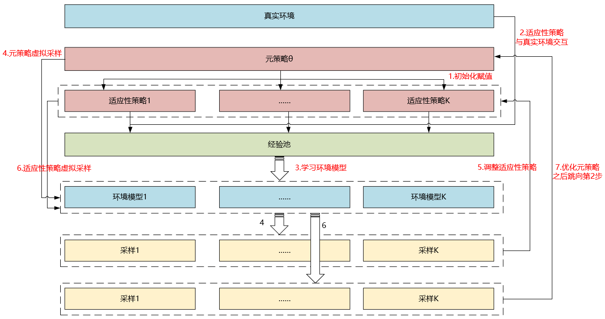

本文记录了一些粗读的强化学习相关的论文。
[DeepMind]Massively Parallel Methods for Deep Reinforcement Learning[Gorila]
本文提出了一个分布式强化学习训练的架构：Gorila(General Reinforcement Learning Architecture)。2015年发于ICML，本文使用DQN算法进行分布式实现。
论文地址：https://arxiv.org/pdf/1507.04296.pdf
模型示意图

解析：
- shard代表参数分片的意思，即模型过大、参数过多，需要将参数分片放置多台机器上
- Bundled Mode模式指的是Actor中的Q网络与Learner中的Q网络一样，但是Learner比Actor多了一个目标Q网络，用于计算梯度
特点
- 并行Actor采数据
- 并行Learner计算梯度，不更新Learner中的模型
- 中心参数服务器，用于维持最新的网络模型。如果模型太大、参数过多，可以分片将网络模型放置多个参数服务器，每个参数服务器中的参数独立不关联，根据learner传的梯度更新相应的变量
- 经验池机制，分为local与global两种
- local，即每个actor节点一个经验池
- global，将所有actor节点的经验存至一个分布式数据库中，这个需要网络通信开销
伪代码

解析：
伪代码中为一个actor节点的流程
注意伪代码中出现两次
Update θ from parameters θ+ of the parameter server，这句话的意思为从中心参数服务器拉取模型到actor和learner，拉取的时间点为：- 每个episode开始前
- 每次执行动作$a_{t}$后，但是在计算梯度并将梯度传递至参数服务器之前
伪代码中
equation 2，代表$g_{i}=\left(r+\gamma \max _{a^{\prime}} Q\left(s^{\prime}, a^{\prime} ; \theta_{i}^{-}\right)-Q\left(s, a ; \theta_{i}\right)\right) \nabla_{\theta_{i}} Q(s, a ; \theta)$，这是DQN中的损失函数注意，与传统DQN不同的是，该分布式DQN中给Learner中的目标Q网络赋值时，是直接将更新N次的中心参数服务器中的模型进行拉取覆盖，而不是使用Learner中的Q网络
中心参数服务器中的参数梯度更新需要累计多个learner传来的梯度后进行更新，使用异步SGD即ASGD方法进行梯度下降。
The parameter server then applies the updates that are accumulated from many learners.
因为每个actor都是阶段更新自己的模型，即从参数服务器中拉取。所以每个actor中的行为策略（采样策略）都不完全相同，事实上，每个actor节点可以采取不同的探索机制，这样可以更有效地探索环境
稳定性
为了应对节点退出、网速慢、节点机器运行慢等问题，该文章中指出使用了一个超参数用来控制actor和server之间最大延时。
过时的梯度（低于时间阈值）将会被丢弃
All gradients older than the threshold are discarded by the parameter server.
过高或过低的梯度也将被丢弃
each actor/learner keeps a running average and standard deviation of the absolute DQN loss for the data it sees and discards gradients with absolute loss higher than the mean plus several standard deviations.
使用AdaGrad更新规则
效果
采用于提出DQN的论文中一样的网络结构，具体请见论文中第5部分。
在Atari 2600 49个游戏中，41个明显优于单GPU DQN。
Gorila进一步实现了DRL的希望：一个可伸缩的架构，随着计算和内存的增加，它的性能会越来越好
[UCB/OpenAI]Model-Based Reinforcement Learning via Meta-Policy Optimization[MB-MPO]
论文地址：https://arxiv.org/pdf/1809.05214.pdf
本文2018年发布与CoRL，提出了一个基于模型的元强化学习算法MB-MPO。相比于一般的元强化学习是从多个MDPs任务中学习一个通用模型加速以后特定任务的模型训练，该文中的方法是将一个model-free的任务学习多个不确定、不完全、不完美的动态模型，即一个模型集合，然后使用这个模型集合学习出该任务的通用模型。因为它有一个从model-free学习动态模型的过程，所以为model-based方法。
元强化学习
$\mathcal{M}$为一系列MDP，共享相同的状态空间$\mathcal{S}$与动作空间$\mathcal{A}$，但是奖励函数可以不同
学习环境动态模型
解析：
$\mathcal{D}_{k}$为第k个学习模型采样的“经验”
$\phi$为用神经网络表示的环境模型的参数
$\hat{f}_{\boldsymbol{\phi}_{k}}\left(\boldsymbol{s}_{t}, \boldsymbol{a}_{t}\right)$为第k个学习模型针对状态$s_{t}$执行动作$a_{t}$后转移状态的预测，其中，神经网络的输出不直接是预测的状态$\color{red}{s_{t+1}}$，而是$\color{red}{\Delta s=s_{t+1}-s_{t}}$，所以$\hat{f}_{\boldsymbol{\phi}_{k}}\left(\boldsymbol{s}_{t}, \boldsymbol{a}_{t}\right)=s_{t}+\Delta s$
We follow the standard practice in model-based RL of training the neural network to predict the change in state $\Delta s=s_{t+1}-s_{t}$ (rather than the next state $s_{t+1}$)
为了防止过拟合，文中使用了3个trick：
- 早停
- 归一化神经网络输入与输出
- 权重归一化
基于环境动态模型的元强化学习
假设学到了K个近似模型$\left\{\hat{f}_{\phi_{1}}, \hat{f}_{\phi_{2}}, \ldots, \hat{f}_{\phi_{K}}\right\}$，把每个模型转换成一个MDP过程，即$\mathcal{M}_{k}=\left(S, A, \hat{f}_{\phi_{k}}, r, \gamma, p_{0}\right)$，其中，奖励函数相同
由此给每个学习到的动态模型分配的行为策略目标函数为：
定义MB=MPO的最终目标函数为：
小写k代表第k个学到的模型，大写K代表模型的总数。
注意看，这里公式后边使用的是$\color{red}{\theta’_{k}}$，而不是$\theta$。这里并没有写错，我起初以为写错了，具体请看后边的伪代码解释。
伪代码

解析：
- MB-MPO分为两部分更新，第一部分更新每个模型分配的行为策略，第二部分更新元策略。注意：行为策略的更新是不连贯的，即不是自身迭代，而是不断使用元策略进行稍加修改然后替换，所以叫做adapted policy
- 上一项提到的两次更新都是对元策略的参数$\theta$进行更新，区别是，第一次更新将更新后的参数赋值给了行为策略，未更改元策略本身，第二次更新直接更新元策略本身
- $\alpha, \beta$为两部分更新的学习率
- 行为策略使用VPG，即传统策略梯度算法进行优化，元策略使用TRPO算法进行优化
- 伪代码中的大致流程如下：
- 初始化策略$\pi_{\theta}$并将其复制K份$\pi_{\theta_{1}^{\prime}}, \dots, \pi_{\boldsymbol{\theta}_{K}^{\prime}}$
- 使用$\pi_{\theta_{1}^{\prime}}, \dots, \pi_{\boldsymbol{\theta}_{K}^{\prime}}$对真实的环境模型进行采样（这一步是实际交互，即真实数据），将数据存入经验池
- 根据经验池训练K个环境模型，即使用
学习环境动态模型部分的公式 - 对于每个更新后的环境模型，用元策略$\color{red}{\pi_{\theta}}$进行虚拟采样（这一步是预测采样，即不实际进行交互），采样到$\mathcal{T}_{k}$以适应性修改行为策略$\boldsymbol{\theta}_{k}^{\prime}$。这里也是前边提到的行为策略更新是不连贯的原因。
- 再用适应性策略$\boldsymbol{\theta}_{k}^{\prime}$进行虚拟采样，采样到$\mathcal{T}_{k}^{\prime}$以更新元策略$\pi_{\theta}$
- 跳向第2步
- 伪代码中虽然没有明确指出，但是其实使用了baseline的trick用来减少方差
流程示意图

效果
- 比之前的model-based方法效果好、收敛快
- 可以达到model-free算法的渐进性能
- 需要更少的经验，低采样复杂性。其实是使用了虚拟采样，提高了数据效率，减少了交互采样的代价。
- 对于模型偏差（model-bias，即环境模型没学到位）的情况，之前的算法不能有效处理，该算法对不完美、不完全、不完整的模型具有很好地鲁棒性